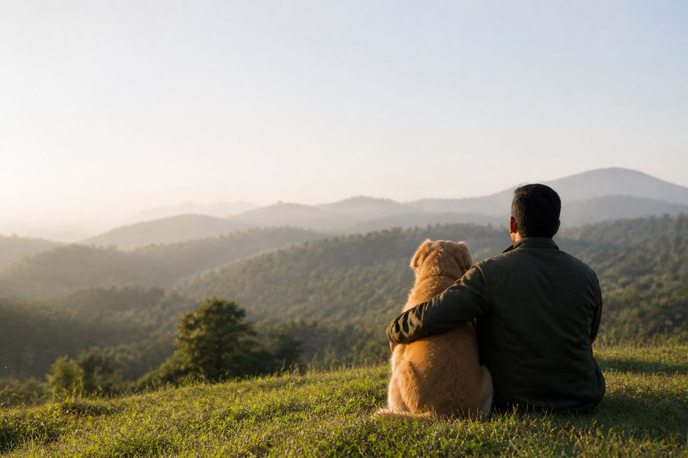

A walk at your dog's pace.
On quiet paths, with as many stops to sniff as your dog likes.
A swim, if your dog likes water.
Some dogs run straight in. Some watch from the bank. Both are fine.
A slow afternoon.
No hurry to be anywhere, for either of you.
An early morning with a view.
Up while it's cool, to a ridge where the valley opens up at sunrise.